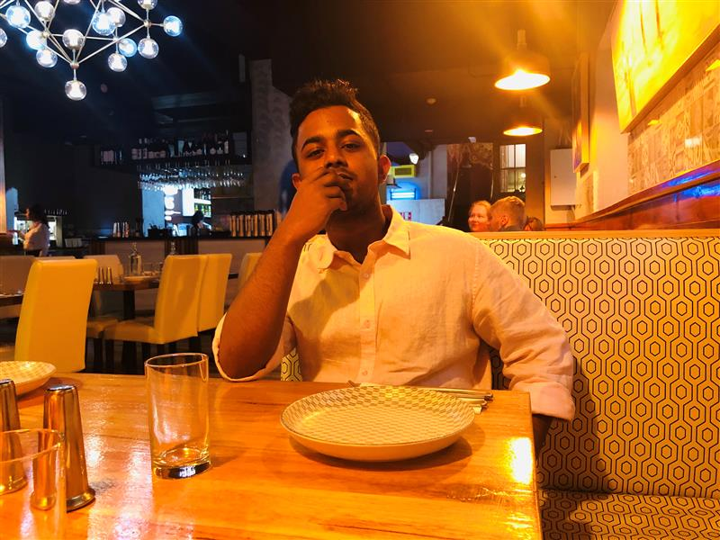
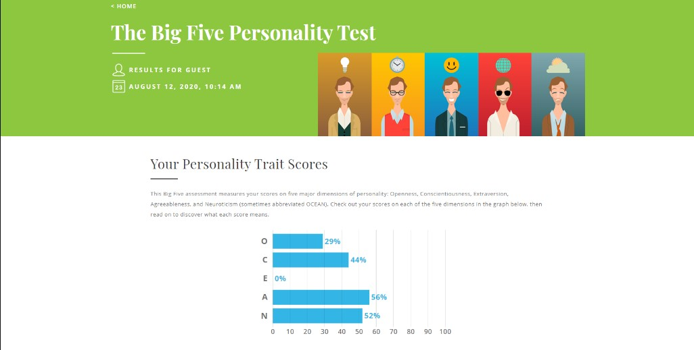
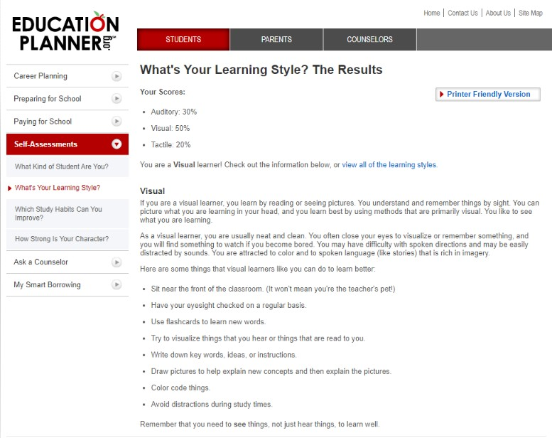
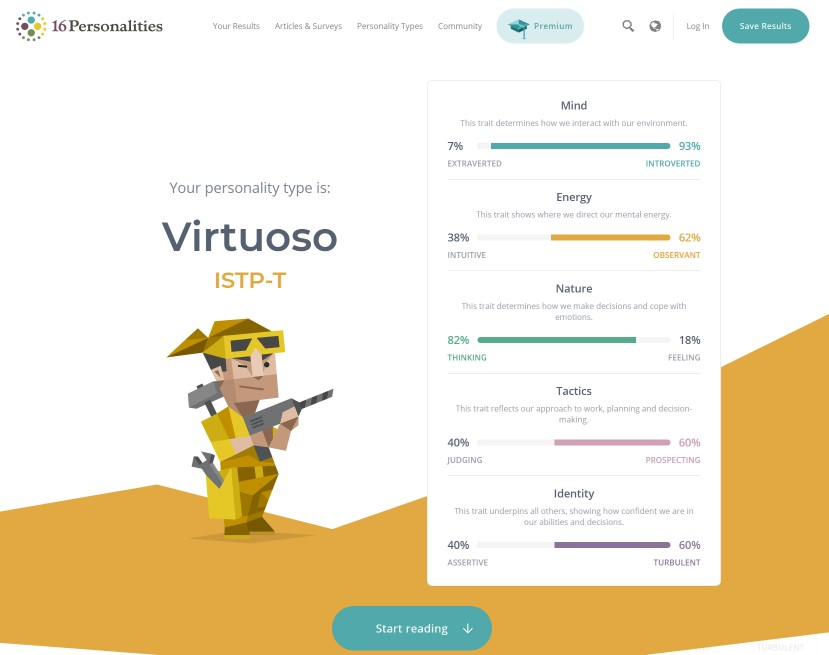

League of Coder
| Team Profile | Ideal Jobs | Tools | Industry Data | IT Work | IT Technologies | Project Ideas | Reference | Group Reflection |
Team Profile
Personal Information

Liam Nguyen - S3842428
I am turning 19 this year (2020), and I was born, and am currently living in Melbourne, Australia. Ever since I was a young, I have been intrigued by computers, games, and the internet. My interest in IT sparked as I spent a lot of time surrounded by computers and games with my friends and family. Ever since then, I have always enjoyed the IT classes in primary/high school and did informatics in VCE with it being my second highest score. I chose to come to RMIT because I heard a lot about it’s focus and drive towards technology which I was keen to dive deeper into. During my time studying here, I aim to develop skills and knowledge towards Cyber Security as it’s a field that I would like to branch out towards. I spend a lot of my free time playing video games, watching YouTube, TV shows, and cooking. I currently have a very small set of skills in numerous programming languages such as HTML, CSS, Python, and Java which I picked up during highschool, as well as my time in this IT course.

Kirithigan Pakirathan -s3780641
I was born in Melbourne on 11th February 2000. My parents are both from Sri Lanka and moved here before I was born, I was also taught to speak Tamil and learn English at school. I studied software development when I was in VCE and got the interest in year 7 to go into the field of information technology. Since I had interest in technology I had started to learn HTML,CSS and a little bit of Javascript to create small websites and try new things. I also tried some C++ and C# but didn’t continue it after increasing my study load. In my subject of Software development one of my projects was to build an app and so I decided since I use mostly apple products I would learn to code in swift and use xcode to develop it. So I ended up learning swift for my sem assignment after that moved to RMIT to continue my interest in IT.

Yuqing Wu - s3808626
I was born in China and I am proud of my country. I live in Guangdong province which is in the south part of China so I can speak three different languages, Mandarin, Cantonese as well as English because Cantonese is the local dialect of Guangdong. Due to the reason that the city where I live is close to some famous cities in the world such as ShenZhen and HongKong, my English ability has also been exercised. Meanwhile my parents believe it will have a lot of benefits and influences on me if I can study abroad not only master English or acquire knowledge but also practice my social skills like taking care of myself and socializing with strangers. Thus I am planning to come to Australia to study. China is well known as a country with a long history and it has made a great contribution to world culture. For example the Great Wall, the Imperial Palace, Terra-Cotta Warriors. Some traditional festivals as well, the Spring Festival, Mid-Autumn Festival. Every traditional festival has its own story handed down from generation to generation. Actually China is a diverse and tolerant country,but she still has her own unique charm.

Yanyi Dong - S3735844
My name is YanyiDong. You can call me Gary. I come from Beijing, China. Beijing is the capital of China, and I started living in Beijing when I was born, Now I am 26 years old. I touch a little bit of knowledge about HTML before five years. At that time, I studied at a college in Beijing. But now I almost forget anything about HTML. Basically, it can’t be used in people`s daily life. My mother tongue is Chinese. I speak Mandarin in my daily life. But I especially love to listen to Cantonese Songs. I graduated from Beijing Youth Politics College in 2016. It is a Junior College. This is why I have to get a bachelor degree before I start my master project.

Fan Wai Hoe - s3738676
My name is Fan Wai Hoe. I was raised and born in Malaysia, where the 3 races (Chinese, Malay, Indian) are combined together and seen as Satu Malaysia, meaning we are all one. My hobbies consist of mainly outdoors sports, such as football, basketball, or frisbee, all of which I have experienced in a competitive environment. During my freetime/breaktime I tend to play computer games with my friends to release a bit of stress. I have been exposed to computer games ever since I was a kid, at around the ages of 6-7, computer games have started to evolve at a tremendous speed, attracting all types of consumers. This of which has piqued my interest in game designing, a field where I have no knowledge and experience of. I learned some basics of IT back in highschool, which mostly consist of external and internal aspects of the system and not about the coding/HTML aspect. I hope to gain traction and much knowledge towards the end of this IT course, allowing me to pursue deeper into the IT world.

Sadman Islam Pathan-s3761401
I am From Bangladesh. I was born and raised in the capital city. I just compleated Foundation From RMIT last semester. As every Bangladeshi, I am a diehard cricket fan. I also enjoy travelling to different countries. So far I have visited 11 nations from different continents. I like travelling and tasting food from different countries. In the future, I would like to work for an international company that would help me to roam around the world more and experience different culture and diversity of people. I also like to meet new people from different countries and tell them about my country and culture. I took some personality test as well the results were pretty interesting
Personal Profile
Liam Nguyen
  
The results of these tests suggest that I am more of a logical thinker over a creative and abstract thinker, hence why I have leaned more towards maths/science subjects. I am introverted rather than extroverted, meaning I prefer to keep things to myself and not being the center of attention as opposed to someone who is more extroverted. However, I am very agreeable, meaning most of the time, I tend to put others needs’ over my own and would rather cooperate rather than be competing with them. These results when in a team, may affect my tendency for small amounts of input I have towards group discussions, and make me lean towards attempting to find information on my own via the internet or similar sources rather than asking a team member. However, my confidence in my own abilities allow me to find ways to improve on my other team members’ work or tasks and allow me to not be afraid of suggesting new ideas.
Kirithigan Pakirathan


These tests are a good indication of what kind of team member I am and the strengths and weaknesses that I would have in a team situation. The tests are explicit in saying that my learning style is visual, an open character and that I have a decent amount of mental energy. These are the traits that if not put with similar or close people like me would cause a group to fall down. However, having members who are strong in my weaknesses would be helpful in bringing the group to a good standard and having it push me and other team members to achieve greater things in the assignment.
Yuqing Wu
1. DISC Assessment Test
*Dominance.Although “D” type people are direct and straightforward, they are not necessarily hasty. They think things through and do not dive head-in so that later, they can have regrets. A “D” personality will take responsibility for their action, as they have taken the best possible course of action. Other traits include: assertive, dynamic and efficient. Such an individual will not lose time to get to the bottom line. Highly motivated, ambitious and bright, this person will play detective as long as it takes in order to solve the problem!
2. The results of an online learning style test;
Based on your responses, you are primarily a(n):
Visual learner.
If you are a VISUAL learner, you may wish to find out more about what you can do to maximize your learning potential.
3. The results of an online Myers-Briggs test;
ENTP: The Visionary
ENTP is one of the 16 different personality types identified by the Myers-Briggs Type Indicator. People with this personality type are often described as innovative, clever, and expressive.ENTPs are also known for be idea-oriented, which is why this personality type has been described as “the innovator,” “the visionary,” and “the explorer.” However, as perceivers, ENTPs are less interested in the here-and-now details than they are in generating ideas and theories. Because of this, they sometimes tend to come up with one idea after another without actually going forward with plans and actions to bring their creative notions into fruition.
“Inventors are usually non-conformists in the workplace, and can succeed in many areas as long as the job does not involve too much humdrum routine,” explains Keirsey.
I think this test result is an analysis of my own. This result tells me a general character and the advantages that this character can give me. Even told me about some occupations that suit my character. This will enable me to have some reference materials in choosing jobs in the future. Being able to choose a career that suits my personality, I believe this will be of great help to my career. But I think this kind of test is still very one-sided, it can't fully tell a person's personality characteristics, it can only be used as a reference. Because I think everyone’s personality is completely different. You can’t just pass two or three tests to determine a certain person’s personality. Everyone makes different choices under different pressures and different environments. , So the test results this time are only a rough reference, but they can also help us make key decisions at certain specific times.
Yanyi Dong


As a result, I am a Turbulent Advocate. Indeed, I often encourage my friends and people around me.even if I am not a leader, I can encourage what someone does best. also, I can encourage someone to do what they can’t do. So I think I am good for the team. But Turbulent Advocate only one is enough in one team.
Fan Wai Hoe
1.Myers-Briggs test
After completion of the Myers-Briggs test online, it has categorized my personality traits as an ENTJ Characteristics:The Executive.The questions are designed to assess the personality of testers by assessing their personality across four major areas: 1)Extraversion and Introversion, 2)Sensing and Intuition, 3) Thinking and Feeling and 4)Perceiving and Judging.
The ENTJ Characteristics are normally extraverted, intuitive, logical thinking, and judging. After completing this test, I realised that I have constantly been practicing and applying the steps to becoming an entrepreneur. This result could bring prosperity among my team and its members because in order for a team to excel, the environment needs to be acceptable, therefore employees/team members can be more willing and creative.
2.Online Learning style test
After completion of the Online Learning style test on Educationplanner.org, it has shown that my learning style is more Tactile. The test have given me an insight on what a tactile learner is and why I am considered a tactile learner.
Tactile learners understand and remember things through physical movement, meaning I am a more 'hands-on' learner as a tactile learner prefers to touch, move, build, or draw on taught knowledge, and can tend to learn better when some type of physical activity is involved. In regards to my future behaviours in group projects, things that tactile learners such as myself can do to learn and cooperate with others is to do lots of hands-on activities like completing a design project for innovation, taking walks, or acting out stories. Constant fidgety food or toys such as chewing a gum or spinning a pen, is normally how tactile learners learn best. While forming a team, it is best to look for members that are the opposite of your own characterictics, because it can produce more ideas and feedbacks.
3.Big 5 Personality Test
Firstly, the big 5 personailities in the test are: Openness, Conscientiousness, Extraversion, Agreeableness, and Neuroticism. After completion of the test, my personality trait scores are, high in Openness being 73% and low in Conscientiousness being 31%, which gives an average score of 58%.
Openness describes an individual's tendency to think in complex, and abstract ways.
Sadman Islam Pathan


From the Myers-Briggs test, I learned a lot about my personality. And from the learning style test what is the most efficient learning way for me. and from the psychometric test, I learned the theory and technique of psychological measurement. Knowing my results I think I will be comfortable working in a group. And also it will help me improve my skills working with a group.